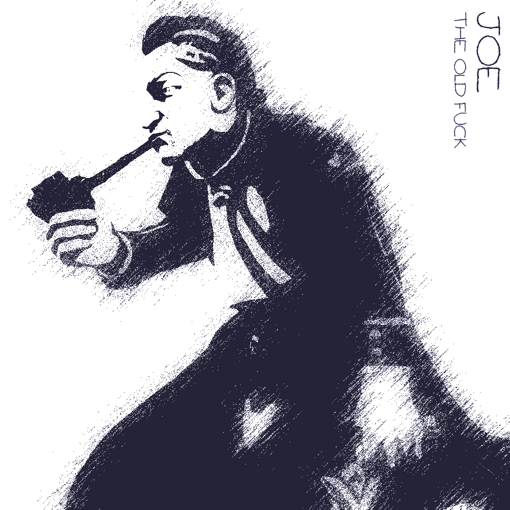
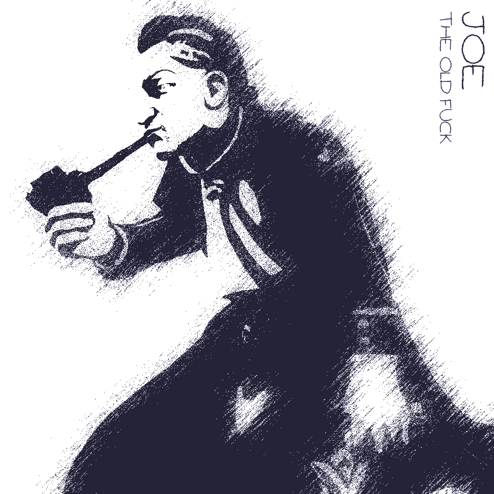
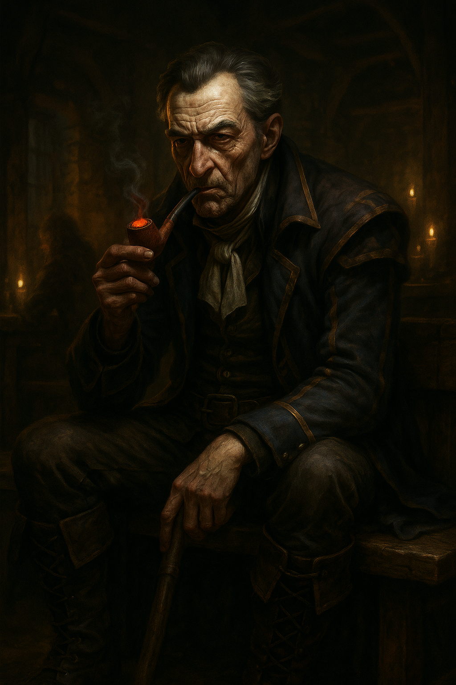
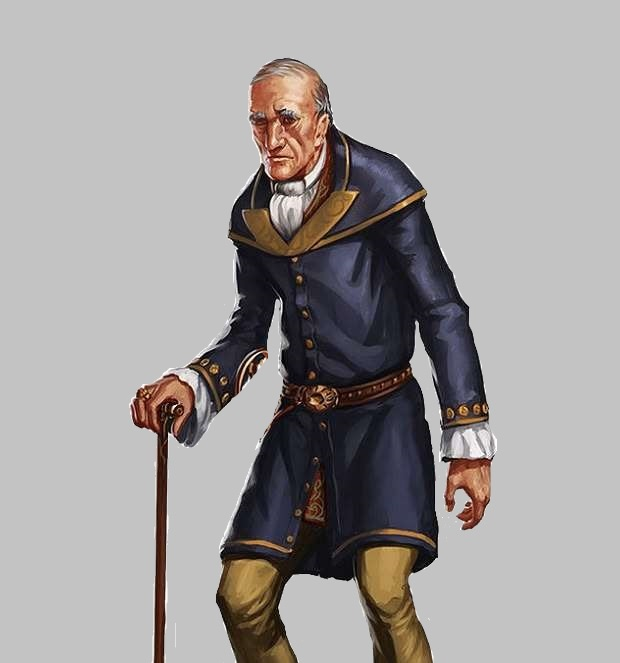

☰
Jonathan Orgon Edwards
Joe. Starej Joe. Co bych vám k němu řekl? Jednou přišel k nám do hospody, že si pamatuje, že tu mívali to nejlepší pivo a solidní obsluhu.
Za jeho mladejch let.
To mohlo být kdy? Před padesáti lety? Stovkou?
Joe je slušně se oblékající stařík chodící o holi, který ví až příliš o vznešených rodinnách a šlechtě, než aby to byla náhoda.
Dobrodružství, které prožil:
- Hledání Neery pt.1
- - první setkání s Joeem, Neeru někdo unesl, vyšetřování kdo jí unesl, Perlíkův moment boje, setkání s GGG a Alocou
- Hledání Neery pt.2
- - Neera se konečně dostala do Věže, kde družinu přivítal Raistlin a slíbil, že Neera se bude učit a bude mít ve Věži útočiště
- Tribunál Velkého Čaroděje pt.I
- Do Pełzacze přijela Garagorská stráž se zatykačem na Huga. Družina s Dernhelmem to vyřešila/pozdržela a vydala se do Garagoru zjistit, co se děje. Našli sérii dalších falešných zatykačů a zjistili, že je vydává V.Č., našli obviněného Toníka, který jim řekl o Tribunálu Velkého Čaroděje.
- Tribunál Velkého Čaroděje pt.II
- Družina hledá tři Soudce. Pomocí stop vypátrali soudkyni Justii Kroell, tu byli nuceni zabít. Poté našli Voletha Dranna, toho vyslechli a nechali ho jít, protože zjistili, že je jen tragickým nečinným přihlížejícím. Ten je ještě varoval před posledním soudcem Borwaldem Gellem. Zuana byla zatknuta a odvedena.
- Tribunál Velkého Čaroděje pt.III
- Družina dostihla soudce Borwalda Gella a zabila jej. Strhli jeho svatyni pro Bhaala a vyzvedli odměnu. Odpočívali a přemýšleli co s Velkým Čarodějem. Následně byli svědkem upálení Zuany a velkého projevu Dana, nového kapitána Garagorské stráže.
 

Člověk Warrior

